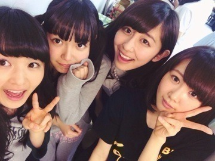

| 2014/03 17 Mon | 人形のパーツ。556回目 |

先週乃木ののは
さゆ、川後、まりっかでした！
川後とはこの前遊んだし
さゆとは今度ご飯行く予定だし
なんだか楽しかった。
さゆの兄と私の兄の共通点でいえば、
スポーツマンじゃないとこかな笑
私の兄の部屋にガチャガチャは
見当たらなかった

ロックバンドに詳しいから
さゆと話が合いそうっ
乃木のので話したとおり、
私は高校を無事卒業しました。
高1の夏に乃木坂46に合格したため
この3年は学校と乃木坂46の活動で
思い出がいっぱいです！
オーディションに合格してからも
高校は変わらず一般科に通いました。
通いながら活動できるか不安だから
このことに反対してたけど、
後悔はないです。
むしろ、親の言うとおりで...
反対していた私がバカだった
というくらい良い友達に
たくさん出会いました。
普通に接してくれて
勉強も助けてくれました。
そして、夢があって
そのために必死に頑張っていて
素の私を受け入れてくれる
一人に出会いました。
立つ舞台は違ってもこれからも
お互いを刺激し合える親友です。
その子は今海外にいます！
できる時はテレビ電話して、
近状報告し合ってるの。
私も頑張らなきゃって思える。
進路のことでご報告。
芸術大学に進学することになりました。
乃木坂46の活動もしながら
大好きな芸術を少しでも
学びたいと思います。
これからもよろしくお願いします！

.........
ななつんが3月22日に
乃木坂46を卒業します。
一度お話した時、
明るくて気さくな印象があります！
ダンス上手だなと密かに思ってました。
1人かけてしまうのは寂しいですが、
応援してます！
がんばれななつん！
まりか
コメント(649)
2014/03/17 23:30